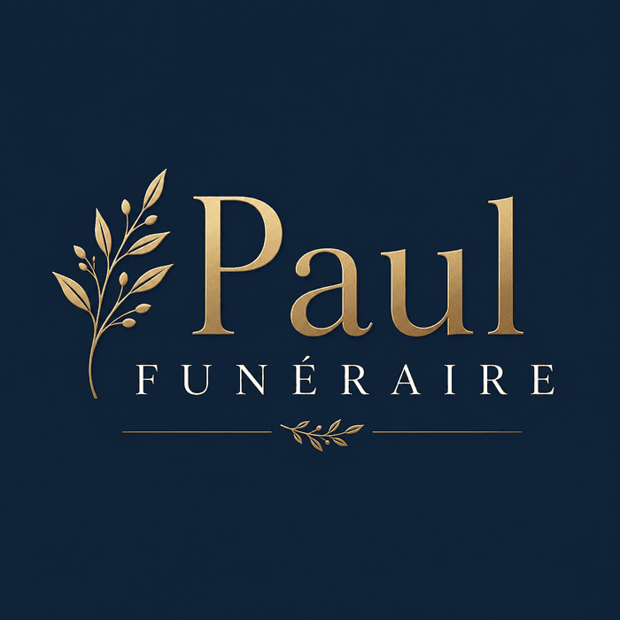
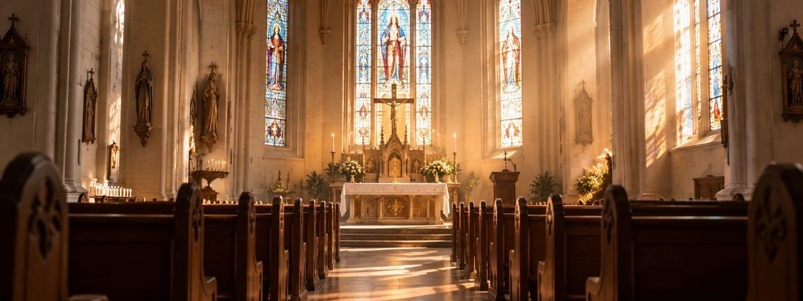
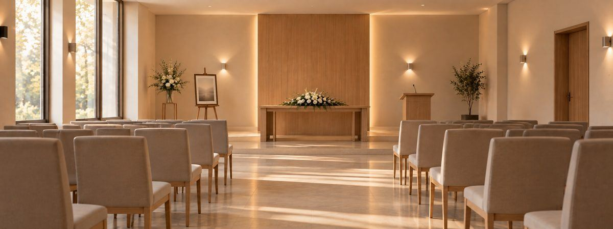

Cérémonies laïques
Une cérémonie pensée intégralement autour de la vie du défunt et des volontés de ses proches, sans texte générique : témoignages, musiques, symboles choisis avec la famille.
Maître de cérémonie indépendant · Manche & Calvados
Chaque famille est différente, chaque vie l'est aussi. Je construis avec vous une cérémonie qui vous ressemble — laïque, religieuse ou au crématorium — plutôt qu'un texte tout fait.
Échanger sur votre projet
Je crois qu'une cérémonie d'adieu ne devrait jamais ressembler à une formalité. Avant de penser au déroulé, je prends le temps d'écouter : qui était cette personne, ce qu'elle aimait, ce que sa famille souhaite dire ou taire, ce qui apaisera plutôt que ce qui suit une norme.
Cette écoute est particulièrement importante lors des cérémonies au crématorium : plutôt que la trame générale récitée par les agents, je propose un hommage réellement construit avec vous — vos mots, votre musique, votre rythme.
Ma priorité reste la même du premier échange jusqu'au jour de la cérémonie : appliquer vos demandes avec bienveillance, sans jamais imposer une forme qui ne vous correspondrait pas.
Trois formes de cérémonies, une même exigence : coller à ce que vous êtes.
Une cérémonie pensée intégralement autour de la vie du défunt et des volontés de ses proches, sans texte générique : témoignages, musiques, symboles choisis avec la famille.
Accompagnement et coordination autour des rites et traditions de votre confession, en lien avec les officiants, pour une cérémonie fluide et respectueuse.
Plutôt que la trame standard, un hommage construit avec vous en amont — pour que ce moment, souvent bref, vous ressemble malgré tout.
Chaque lieu impose son rythme et ses codes — je m'y adapte pour que la cérémonie reste fidèle à vos volontés.

Cérémonie religieuse
Dans une église ou un lieu de culte, je coordonne le déroulé avec les officiants pour que la cérémonie reste fluide, dans le respect des rites.

Cérémonie civile · crématorium ou salle de cérémonie
Au crématorium ou dans une salle laïque, je construis un hommage personnalisé — sans trame imposée, à l'image du défunt et de sa famille.
Par téléphone ou en rencontre, pour comprendre votre situation et vos besoins, sans engagement.
Un temps consacré à la vie du défunt et aux souhaits de la famille : ce qui doit être dit, ce qui doit être tu.
Construction de la cérémonie, choix des textes et musiques, en gardant votre accord à chaque étape.
Présence, animation et attention constante à la famille, pour que ce moment se déroule comme prévu ensemble.
Basé à Saint-Hilaire-du-Harcouët, j'interviens dans tout le sud de la Manche et le Calvados, jusqu'à Pontorson et Aunay-sur-Odon environ — et au-delà selon les situations, n'hésitez pas à me contacter pour en discuter.
Cette rubrique sera complétée très prochainement avec mes coordonnées (téléphone, email) et les informations légales de la micro-entreprise.